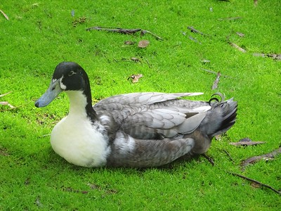

Ducks, feathery friends
Ducks are one of the most common bird families. They exist in almost every country and show several breeds, with diffrientated color, shape...
Ducks are commonly get as pets even knowing they might have a pretty aggressive character
My personal favorite are:
- Mallard Duck

- White Call Duck

- Swedish Blue Duck

There are lots of interesting facts about ducks out there, let´s check some of them:
- They´ve got waterproof feathers. That means they can go underwater without getting wet!
- They are omnivourous. They enjoy eating grass, seeds, fruit, fish, seafood...
- Ducks are prepared for water, land and air activities. Isn´t that impressive?!